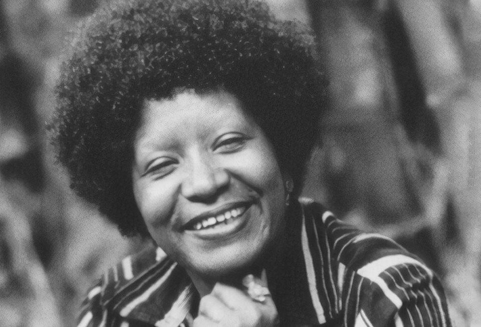
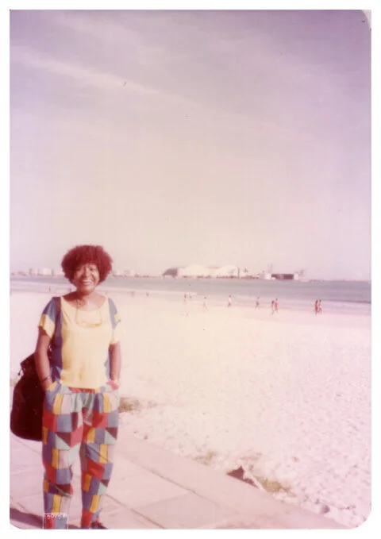
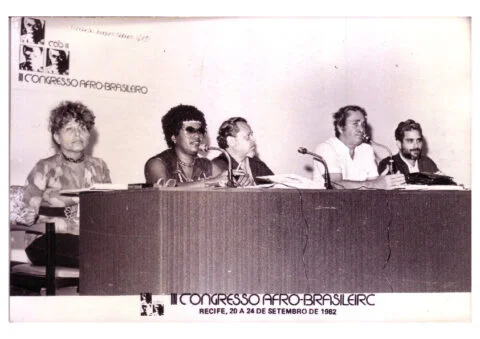
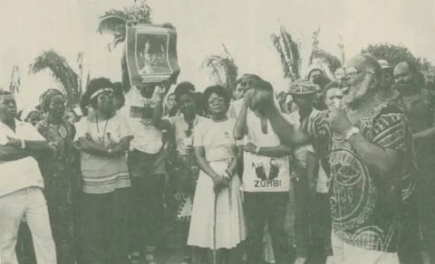
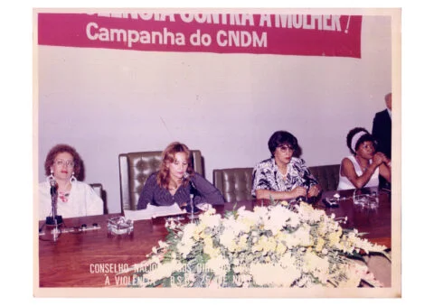

1935
Nasce Lélia Gonzalez em Belmiro Braga, Minas Gerais, em uma família negra. Cresce em um contexto de desigualdade racial e de gênero, o que marcará profundamente sua consciência política e intelectual.

“Para mim, uma pessoa negra que tem consciência de sua negritude está na luta contra o racismo”
Lélia Gonzalez
Foto: Acervo REDEH, “Combate ao Racismo - Discursos e Projetos”, código BR RJ REDEH.NM.LG.02.CD05.02.08.02, 1983.
Trajetória inicial: origens, formação intelectual e engajamento político

Foto: Lélia Gonzalez — via Acervo Histórico de Movimentos Negros (reprodução)
Lélia Gonzalez (1935–1994) foi uma antropóloga brasileira, ativista política e uma das principais teóricas do feminismo negro no Brasil. Nascida em Belmiro Braga, Minas Gerais, Lélia cresceu em um contexto marcado pela discriminação racial e pelo machismo estrutural. Apesar das limitações impostas às mulheres negras de sua época, desenvolveu uma trajetória acadêmica e intelectual brilhante, tornando-se uma figura central nos debates sobre raça, gênero e identidade cultural no Brasil. Sua formação em antropologia lhe permitiu combinar rigor acadêmico com engajamento político, analisando criticamente as realidades de opressão vividas pelas mulheres negras.
Ao longo de sua vida, Lélia articulou pensamento teórico com ação política, contribuindo para a formação de movimentos sociais e grupos de consciência feminista negra. Sua obra transcendeu o campo da academia, alcançando comunidades, escolas e espaços de luta. Como cofundadora do Instituto de Pesquisa das Culturas Negras (IPCN) e participante ativa do movimento negro brasileiro, Lélia desenvolveu uma perspectiva única que conectava análises de racismo, sexismo e colonialismo. Seu conceito de "améfricanidade" e suas reflexões sobre a importância das religiões afro-brasileiras e da cultura negra marcaram gerações de intelectuais e ativistas. Mesmo enfrentando perseguições políticas durante a ditadura militar e obstáculos pela discriminação racial, manteve-se comprometida com a libertação das mulheres negras até seu falecimento em 1994.
Lélia também participou da fundação do Movimento Negro Unificado, do Instituto de Pesquisas das Culturas Negras e do Nzinga — Coletivo de Mulheres Negras. Seus conceitos de amefricanidade e pretuguês aproximaram raça, gênero, classe, cultura, linguagem e colonialidade, influenciando o feminismo negro no Brasil e na América Latina.
Nasce Lélia Gonzalez em Belmiro Braga, Minas Gerais, em uma família negra. Cresce em um contexto de desigualdade racial e de gênero, o que marcará profundamente sua consciência política e intelectual.
Estuda em universidades brasileiras e obtém formação em antropologia. Durante esse período, começa a desenvolver uma perspectiva crítica sobre raça e gênero na sociedade brasileira, influenciada pelas teorias antropológicas e suas observações da realidade.
Durante a ditadura militar, Lélia mantém-se ativa em círculos intelectuais e políticos clandestinos. Apesar da perseguição política, continua desenvolvendo trabalhos acadêmicos e articula-se com movimentos sociais preocupados com a libertação das mulheres negras.
Torna-se figura destacada em movimentos feministas e negros. Participa de seminários, conferências e grupos de discussão que buscam articular análises de raça, gênero e classe. Suas críticas ao feminismo branco ganham força e relevância.
Cofunda o Instituto de Pesquisa das Culturas Negras (IPCN), espaço fundamental para pesquisa, reflexão e mobilização em torno das questões de raça e cultura no Brasil. Esta instituição torna-se central para o movimento negro brasileiro.
Publica e apresenta trabalhos acadêmicos que se tornam referências para os estudos de raça, gênero e cultura. Seu conceito de "améfricanidade" e suas análises sobre o machismo no movimento negro ganham destaque e influenciam gerações.
Continua sua atividade intelectual e política, consolidando-se como uma das principais pensadoras do feminismo negro brasileiro. Suas reflexões sobre identidade, cultura e libertação ganham abrangência internacional.
Falece Lélia Gonzalez, deixando um legado intelectual e político de grande importância para a luta das mulheres negras e para o movimento negro brasileiro e internacional.

Foto: Lélia Gonzalez — via Acervo do Movimento Negro Brasileiro
Lélia Gonzalez é extraordinária porque foi capaz de construir uma teoria da libertação das mulheres negras que não copiava modelos europeus ou americanos, mas que criava a partir da realidade brasileira. Em um contexto em que o feminismo era frequentemente branco e o movimento negro era frequentemente machista, Lélia criou um espaço de reflexão e luta que integrava raça, gênero e classe. Sua inteligência analítica permitiu que ela desafiasse o racismo do feminismo brasileiro e o machismo do movimento negro, propondo uma abordagem radicalmente diferente.
O que torna Lélia ainda mais notável é sua coragem intelectual. Ela não apenas seguiu teorias estabelecidas, mas criou conceitos próprios — como "améfricanidade" — que ajudaram a compreender a herança africana e sua importância na formação cultural brasileira. Sua reflexão sobre as religiões afro-brasileiras, a estética negra e a produção intelectual de mulheres negras abriram novos caminhos para pensar a identidade e a resistência.
Além disso, Lélia enfrentou perseguições políticas, discriminação racial e resistência dentro de seus próprios espaços de luta, mas nunca deixou de acreditar na possibilidade de libertação. Sua trajetória demonstra que o pensamento crítico, quando articulado com ação política, tem o poder de transformar consciências e abrir novos horizontes para a resistência coletiva. Por tudo isso, ela não é apenas uma intelectual importante, mas uma das principais teóricas da libertação das mulheres negras na América Latina.
Influência sobre teoria, política, educação e movimentos sociais.
O legado de Lélia Gonzalez permanece vivo e relevante para as lutas contemporâneas das mulheres negras, não apenas no Brasil, mas em toda a América Latina. Primeiro, ela estabeleceu as bases teóricas para o feminismo negro brasileiro, propondo que as mulheres negras precisavam articular análises de raça, gênero e classe para entender sua opressão específica. Suas críticas ao feminismo hegemônico abriram espaço para que outras mulheres negras desenvolvessem suas próprias perspectivas. Segundo, Lélia criou conceitos e vocabulários que continuam sendo utilizados para compreender a realidade brasileira — seu conceito de "améfricanidade" e sua análise da importância das culturas afro-brasileiras remanescem como ferramentas analíticas indispensáveis.
Além disso, Lélia demonstrou a importância da produção intelectual de mulheres negras, legitimando o conhecimento que vem das margens e das experiências vividas. Sua atuação no Instituto de Pesquisa das Culturas Negras consolidou um espaço de reflexão crítica que continua influenciando pesquisadores e ativistas. Seu trabalho sobre as religiões afro-brasileiras, a estética negra e a cultura popular reafirmou a importância da autodeterminação cultural como ferramenta de resistência. Hoje, Lélia é celebrada como uma das principais pensadoras do feminismo negro brasileiro e internacional, e seu pensamento continua orientando movimentos sociais, trabalhos acadêmicos e lutas pela justiça racial e de gênero. Seu legado incentiva novas gerações a compreender que a libertação das mulheres negras é inseparável da libertação de toda uma comunidade e de toda uma estrutura de pensamento que resiste ao colonialismo e ao racismo.
Fotos, documentos e registros históricos.

Registro da participação de Lélia Gonzalez no Congresso Afrobrasileiro, realizado em Recife entre 20 e 24 de setembro de 1982, evidenciando sua atuação intelectual e política na construção do pensamento antirracista no Brasil.
Foto: Acervo REDEH, “II Congresso Afrobrasileiro”, código BR RJ REDEH.NM.LG.02.CD05.11.21, 24 set. 1982.

Registro de manifestação do movimento negro em homenagem a Zumbi dos Palmares, evidenciando a força da mobilização coletiva na luta contra o racismo e na valorização da memória, da resistência e da cultura afro-brasileira.
Foto: Acervo REDEH, “Combate ao Racismo - Discursos e Projetos”, código BR RJ REDEH.NM.LG.02.CD05.02.08.02, 1983.

Registro de reunião da campanha do CNDM contra a violência à mulher, evidenciando a participação de mulheres em espaços de debate político e institucional voltados à defesa dos direitos das mulheres no Brasil.
Foto: Acervo REDEH, “Campanha do CNDM”, código BR RJ REDEH.NM.LG.02.CD05.11.08, 25 nov. 1985.
Livros, artigos e documentos históricos.
Fonte para dados biográficos, formação, família, produção intelectual e atuação política de Lélia Gonzalez. Link: https://www.blogs.unicamp.br/mulheresnafilosofia/lelia-gonzalez/
Apresenta sua trajetória intelectual, atuação na PUC-Rio, participação no IPCN, MNU, Nzinga e Conselho Nacional dos Direitos da Mulher. Link: https://ea.fflch.usp.br/autor/lelia-gonzalez
Perfil biográfico sobre nascimento, família, formação, conceitos, militância e legado público de Lélia Gonzalez. Link: https://prefeitura.pbh.gov.br/cultura/ric/personalidades-negras/lelia-gonzalez
Fonte sobre dados biográficos, produção ensaística, crítica ao feminismo hegemônico e recepção do legado de Lélia. Link: https://www.letras.ufmg.br/literafro/ensaistas/1204-lelia-gonzalez.
Exposição sobre a presença de Lélia Gonzalez no pensamento feminista negro e no acervo de Sueli Carneiro. Link: https://acervo.casasuelicarneiro.org.br/exposicao-virtual/lelia-gonzalez-no-acervo-de-sueli-carneiro
Reportagem cultural sobre a relevância pública de Lélia Gonzalez, sua docência, militância e influência contemporânea. Link: https://www.itaucultural.org.br/secoes/series/lelia-gonzalez-um-simbolo-da-luta-feminista-e-antirracista-brasileira
Conheça outras trajetórias marcantes da luta por justiça e transformação social.

Foto: John Mathew Smith / www.celebrity-photos.com, via Wikimedia Commons.
Simbolo da luta contra a segregação racial nos Estados Unidos e referência mundial em coragem civil.
Saiba mais
Imagem: representação de Bartolina Sisa em cédula boliviana — via Banco Central da Bolívia.
Estrategista quilombola cuja resistência ajudou a marcar a luta negra por liberdade no Brasil lorem.
Saiba mais
Imagem: representação de Bartolina Sisa em cédula boliviana — via Banco Central da Bolívia.
Intelectual fundamental para os debates sobre feminismo negro, cultura e desigualdade racial no Brasil.
Saiba mais
Imagem: representação de Bartolina Sisa em cédula boliviana — via Banco Central da Bolívia.
Liderença indigêna e jurista que ampliou a presença dos povos originários nos espaços de decisão.
Saiba mais